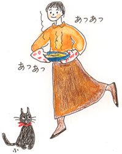
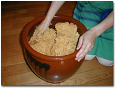

|
■どりゃっ！
今年もまた、味噌を仕込む時期がめぐってきた。１年間に使う味噌のうちの10キロ分を自足するようになって、４年。どうして味噌をつくろうと思ったのだったか、さて。味噌が好きだった。それもある。が、それだけではない。味噌を仕込むことで、日頃のインチキ、手抜きなんかを少ーし埋め立てたような気持ちになっていた。それもある。が、それだけではない。
私の食卓の基本形は、ご飯とおみおつけ。これをていねいに美味しくつくれば、まずはなんとかなると思いながら、やってきた。ご飯のお米は年中夫の両親がつくったものを食べさせてもらっている。「新米がたのしみ」、「もち米もつくってね」なぞと気ままなことを言うばかりの私も、そういう有り難いお米を炊いているうち、考えるようになった。ご飯と対をなすおみおつけの味噌をつくろうと思ったのはこのときだ。ささやかに味噌づくりをして、うちのご飯とおみおつけの釣り合いをとりたい、と。早く腕を上げ、両親のおみおつけもまかないたい、と夢みているのだが。
２月に塩切り麹、大豆、塩を用意する。せっせと大豆を煮てつぶし、塩切り麹をよくよくもむ。そうして材料を合わせて仕込んだあと、一度、７月下旬の土用のころに天地返しをする。10月、やっと食べはじめ、味噌の熟成を追いかけながら、５か月くらいの間に食べきるというのが、私の味噌のめぐりとなっている。つぎの味噌を仕込もうといういま、甕（かめ）の底の方からこちらを見上げている味噌は、成熟した味噌。色も濃く、香りも味も深く複雑に変化してきた。
なかなかいい味噌になったので、先日打ち合わせに出かけるとき、ふと思いついて、500グラムほど包んで鞄にしのばせた。仕事仲間のＮさんに、味を見てもらおうかなあという気になったのだ。
仕事の段取りがすみ、お茶を一杯ということになったとき、
「お味噌、好き？」
と尋ねてみた。
「ええ、大好き。でも、好きになったのは大人になってからだな」
と、彼は言った。
「子どものころは、ご飯に牛乳という組み合わせで食事をしていましたから」
彼のお母さんは、味噌が好きではないという。日本人だからね、と言いながらこしらえてくれることもあったが、食卓に味噌汁があることは稀だったそうだ。ご飯と牛乳という組み合わせをひとに話すと、「えっ」と驚かれたものだとＮさんは笑う。
「1970年代の前半に、東京のあちらこちらに『ジロー』という店ができて、そこのメニューにドリアってのがあったんですよ」
「ふんふん」
「ドリアって、言ってみればご飯に牛乳かけて焼いたってなものでしょ。なんだかうれしかったですよ。ご飯に牛乳ってことが」
さて、ドリアって、ご飯のグラタンのことだろうか。私はご飯のグラタンというのは、ひとを元気づける食べものだと思うのだ。それで、誰かが風邪をひいたと聞くと、つくって焼いて、届けることもある。ご飯のグラタンを「ドリア」と呼びかえただけで、またちょっとボルテージが上がる感じがするけれど、なぜだろうか。
「どりゃっ！」ってかしらね。
「……」
Ｎさんの話を聞いていたら、目からも胃袋からもウロコのようなものがポロポロッと落ちた。食べず嫌いは損だ。「えっ」と思っても、食べてみたら美味しかったということ、あるでしょ。「ご飯と牛乳？ 何だかなあ」と思いつづけていると、ドリアの世界には近づけなくなるわけだ。
どうして味噌のはなしがドリアになったのだったか。よく思い出せないが、Ｎさんは私のつくった味噌をうれしそうにもらってくれた。そして後日舞いこんだ葉書にこんなことが書いてあった。
「そういうわけで、僕にとって味噌はなつかしい味ではないのです。山本さんの味噌でつくった味噌汁をすすりながら、しみじみとしあわせを感じました。まるで味噌の方で僕をなつかしんでくれてるみたい。ありがとうございました。Ｎ」
いや、まいったなあ、照れかくしにもう一度、お許しを。
「どりゃっ！」

■ご飯のグラタン（４人分）
ご飯…………………………………………４人分
ベーコン………………………………………適宜
玉ねぎ…………………………………２分の１個
椎茸……………………………………………適宜
ホワイトソース
バター………………………………………50g
小麦粉………………………………………70g
牛乳………………………………………２カップ
スープ（スープの素２個見当）３〜３カップ半
ロリエ（好みで）……………………………１枚
塩、こしょう…………………………………適宜
〈ホワイトソース〉
・バターで小麦粉をよく炒める。そこへ牛乳を少しずつ加える。ぽろぽろになっても、あせらず心穏やかに混ぜていくこと。火は弱火。
・スープを少しずつ加えて混ぜつづける。だまができても大丈夫。自信をもって混ぜつづける。ロリエを入れる。塩、こしょうを加え、仕上げる。
〈ご飯〉
・玉ねぎと椎茸を粗いみじん切りに。玉ねぎをサラダ油少量で炒め、椎茸、ベーコンを加える。
・塩、こしょうで味をととのえる。
・耐熱容器に〈ご飯〉を入れ、上から〈ホワイトソース〉をとろりとかけてオーブンへ。 少し焦げ目がついたら、でき上がり。あつあつを食べるとからだがあたたまること受け合い！
※ベーコンのかわりに、あさりや海老ののむきみを入れたり、ご飯をトマトライスにしても美味しい。
※ホワイトソースの上にパン粉、チーズをかけてから焼いたり、食べる前にパセリのみじん切りをかけるなど、好みで。

|